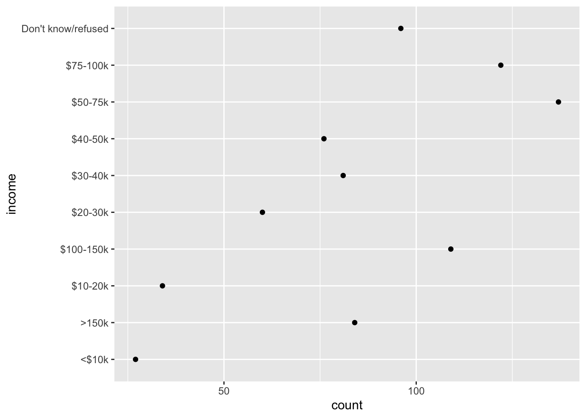
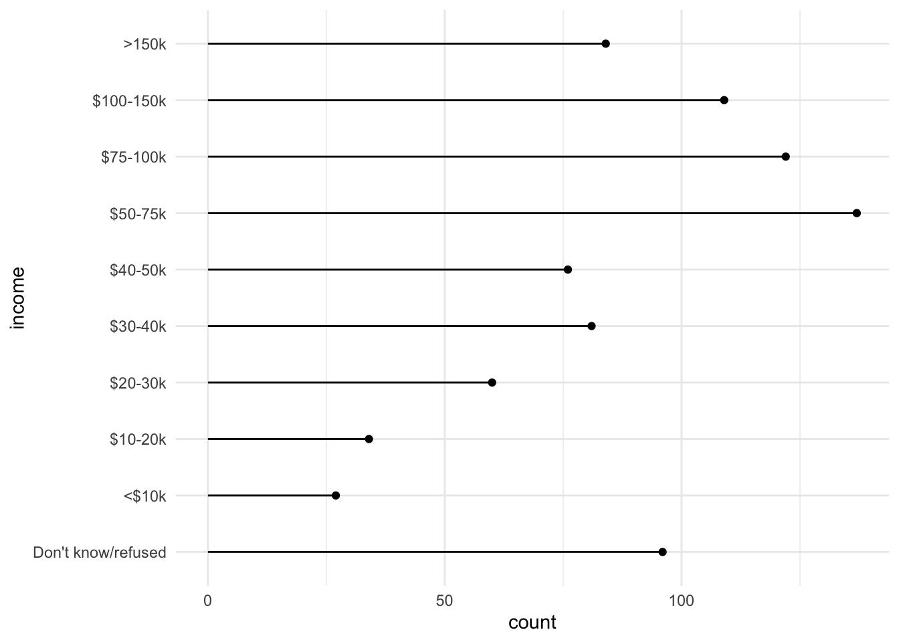

library(tidyverse)pivot_longer
Tidy data
All the major functions in the ggplot2 and dplyr packages (among many others) assume that your data is in a tidy format, meaning that:
each data set holds one and only one type of observation
each column holds one and only one variable
each row holds one and only one observation
When a set doesn’t have these properties, we begin by reshaping it. Many of the best tools for doing this are included in the tidyr package, including pivot_longer.
Handling wide data formats
Let’s look at the relig_income.
glimpse(relig_income)Rows: 18
Columns: 11
$ religion <chr> "Agnostic", "Atheist", "Buddhist", "Catholic", "D…
$ `<$10k` <dbl> 27, 12, 27, 418, 15, 575, 1, 228, 20, 19, 289, 29…
$ `$10-20k` <dbl> 34, 27, 21, 617, 14, 869, 9, 244, 27, 19, 495, 40…
$ `$20-30k` <dbl> 60, 37, 30, 732, 15, 1064, 7, 236, 24, 25, 619, 4…
$ `$30-40k` <dbl> 81, 52, 34, 670, 11, 982, 9, 238, 24, 25, 655, 51…
$ `$40-50k` <dbl> 76, 35, 33, 638, 10, 881, 11, 197, 21, 30, 651, 5…
$ `$50-75k` <dbl> 137, 70, 58, 1116, 35, 1486, 34, 223, 30, 95, 110…
$ `$75-100k` <dbl> 122, 73, 62, 949, 21, 949, 47, 131, 15, 69, 939, …
$ `$100-150k` <dbl> 109, 59, 39, 792, 17, 723, 48, 81, 11, 87, 753, 4…
$ `>150k` <dbl> 84, 74, 53, 633, 18, 414, 54, 78, 6, 151, 634, 42…
$ `Don't know/refused` <dbl> 96, 76, 54, 1489, 116, 1529, 37, 339, 37, 162, 13…My goal is to generate a lollipop chart showing the number of agnostic respondents for each income level. For this, we will need columns representing income levels and counts for each religion.
This data is in a wide format. The current column names (except the first) are actually values of one of our variables (income level). The cells in those columns contain the values of the count variable.
To fix this, we need to say what the problem columns are, what the name of the variable corresponding to the column names should be, and what the name of the variable corresponding to the entries in the problem columns should be.
The primary tool for handling wide data sets is tidyr::pivot_longer. To use it, we specify these 3 things in order.
relig_long <- relig_income |>
pivot_longer(cols = -religion,
names_to = "income",
values_to = "count")
glimpse(relig_long)Rows: 180
Columns: 3
$ religion <chr> "Agnostic", "Agnostic", "Agnostic", "Agnostic", "Agnostic", "…
$ income <chr> "<$10k", "$10-20k", "$20-30k", "$30-40k", "$40-50k", "$50-75k…
$ count <dbl> 27, 34, 60, 81, 76, 137, 122, 109, 84, 96, 12, 27, 37, 52, 35…Now we remove all non-agnostics and generate a preliminary scatterplot of our data.
relig_agn <- relig_long |>
filter(religion == "Agnostic")
ggplot(relig_agn, aes(x = count,
y = income)) +
geom_point()
The next chunk generates a more attractive version of this.
# put income levels in order
relig_agn <- relig_agn |>
mutate(income = fct_relevel(income,
"$100-150k",
">150k",
after = Inf),
income = fct_relevel(income,
"Don't know/refused"))
# Lollipop chart
ggplot(relig_agn, aes(x = count,
y = income)) +
geom_point() +
geom_segment(aes(xend = 0,
yend = income)) +
theme_minimal()
Another example
Wide data is very common in the wild. A somewhat more complicated example tidyr::billboard, which includes song rankings from the year 2000.
head(billboard)# A tibble: 6 × 79
artist track date.entered wk1 wk2 wk3 wk4 wk5 wk6 wk7 wk8
<chr> <chr> <date> <dbl> <dbl> <dbl> <dbl> <dbl> <dbl> <dbl> <dbl>
1 2 Pac Baby… 2000-02-26 87 82 72 77 87 94 99 NA
2 2Ge+her The … 2000-09-02 91 87 92 NA NA NA NA NA
3 3 Doors Do… Kryp… 2000-04-08 81 70 68 67 66 57 54 53
4 3 Doors Do… Loser 2000-10-21 76 76 72 69 67 65 55 59
5 504 Boyz Wobb… 2000-04-15 57 34 25 17 17 31 36 49
6 98^0 Give… 2000-08-19 51 39 34 26 26 19 2 2
# ℹ 68 more variables: wk9 <dbl>, wk10 <dbl>, wk11 <dbl>, wk12 <dbl>,
# wk13 <dbl>, wk14 <dbl>, wk15 <dbl>, wk16 <dbl>, wk17 <dbl>, wk18 <dbl>,
# wk19 <dbl>, wk20 <dbl>, wk21 <dbl>, wk22 <dbl>, wk23 <dbl>, wk24 <dbl>,
# wk25 <dbl>, wk26 <dbl>, wk27 <dbl>, wk28 <dbl>, wk29 <dbl>, wk30 <dbl>,
# wk31 <dbl>, wk32 <dbl>, wk33 <dbl>, wk34 <dbl>, wk35 <dbl>, wk36 <dbl>,
# wk37 <dbl>, wk38 <dbl>, wk39 <dbl>, wk40 <dbl>, wk41 <dbl>, wk42 <dbl>,
# wk43 <dbl>, wk44 <dbl>, wk45 <dbl>, wk46 <dbl>, wk47 <dbl>, wk48 <dbl>, …Currently every row is a song, which is logical for many purposes. However, if we want to track the progress of songs over time, we’ll need a week variable. Here’s the simplest pivot to fix the problem.
billboard_long <- billboard |>
pivot_longer(cols = starts_with("wk"),
names_to = "week",
values_to = "rank")
head(billboard_long, n = 10)# A tibble: 10 × 5
artist track date.entered week rank
<chr> <chr> <date> <chr> <dbl>
1 2 Pac Baby Don't Cry (Keep... 2000-02-26 wk1 87
2 2 Pac Baby Don't Cry (Keep... 2000-02-26 wk2 82
3 2 Pac Baby Don't Cry (Keep... 2000-02-26 wk3 72
4 2 Pac Baby Don't Cry (Keep... 2000-02-26 wk4 77
5 2 Pac Baby Don't Cry (Keep... 2000-02-26 wk5 87
6 2 Pac Baby Don't Cry (Keep... 2000-02-26 wk6 94
7 2 Pac Baby Don't Cry (Keep... 2000-02-26 wk7 99
8 2 Pac Baby Don't Cry (Keep... 2000-02-26 wk8 NA
9 2 Pac Baby Don't Cry (Keep... 2000-02-26 wk9 NA
10 2 Pac Baby Don't Cry (Keep... 2000-02-26 wk10 NAThe output has a few problems. Each song currently has 76 rows, one for each week considered, even if it only charted once. Additionally, we’d prefer if the week column were numeric and didn’t include the wk prefix.
billboard_long <- billboard |>
pivot_longer(cols = starts_with("wk"),
names_to = "week",
names_prefix = "wk",
names_transform = list(week = as.integer),
values_to = "rank",
values_drop_na = TRUE)
head(billboard_long, n = 10)# A tibble: 10 × 5
artist track date.entered week rank
<chr> <chr> <date> <int> <dbl>
1 2 Pac Baby Don't Cry (Keep... 2000-02-26 1 87
2 2 Pac Baby Don't Cry (Keep... 2000-02-26 2 82
3 2 Pac Baby Don't Cry (Keep... 2000-02-26 3 72
4 2 Pac Baby Don't Cry (Keep... 2000-02-26 4 77
5 2 Pac Baby Don't Cry (Keep... 2000-02-26 5 87
6 2 Pac Baby Don't Cry (Keep... 2000-02-26 6 94
7 2 Pac Baby Don't Cry (Keep... 2000-02-26 7 99
8 2Ge+her The Hardest Part Of ... 2000-09-02 1 91
9 2Ge+her The Hardest Part Of ... 2000-09-02 2 87
10 2Ge+her The Hardest Part Of ... 2000-09-02 3 92More complicated pivots
Untidy data can get very complicated. As a final example, consider the anscombe data set, which includes 4 very different sets with nearly identical correlations.
glimpse(anscombe)Rows: 11
Columns: 8
$ x1 <dbl> 10, 8, 13, 9, 11, 14, 6, 4, 12, 7, 5
$ x2 <dbl> 10, 8, 13, 9, 11, 14, 6, 4, 12, 7, 5
$ x3 <dbl> 10, 8, 13, 9, 11, 14, 6, 4, 12, 7, 5
$ x4 <dbl> 8, 8, 8, 8, 8, 8, 8, 19, 8, 8, 8
$ y1 <dbl> 8.04, 6.95, 7.58, 8.81, 8.33, 9.96, 7.24, 4.26, 10.84, 4.82, 5.68
$ y2 <dbl> 9.14, 8.14, 8.74, 8.77, 9.26, 8.10, 6.13, 3.10, 9.13, 7.26, 4.74
$ y3 <dbl> 7.46, 6.77, 12.74, 7.11, 7.81, 8.84, 6.08, 5.39, 8.15, 6.42, 5.73
$ y4 <dbl> 6.58, 5.76, 7.71, 8.84, 8.47, 7.04, 5.25, 12.50, 5.56, 7.91, 6.89To plot these, we need columns called x, y, and set_number, so the names in anscombe actually encode the values of two variables.
anscombe |>
pivot_longer(
cols = everything(),
names_to = c(".value", "set"),
names_pattern = "(.)(.)")# A tibble: 44 × 3
set x y
<chr> <dbl> <dbl>
1 1 10 8.04
2 2 10 9.14
3 3 10 7.46
4 4 8 6.58
5 1 8 6.95
6 2 8 8.14
7 3 8 6.77
8 4 8 5.76
9 1 13 7.58
10 2 13 8.74
# ℹ 34 more rowsI have a whole vid on anscombe. Check it out at https://youtu.be/Wf21BVJZjEA.